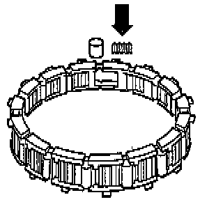
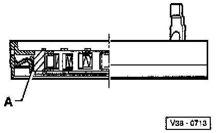

Disassemble/Assemble

COMPONENT NOTES AND INFORMATION
1 Rollers
- Installing, refer to Fig. 1, below.
2 Springs
- Installing, refer to Fig. 1, below.
3 Cage
- Installing, refer to Fig. 2, below.
- Securing, refer to Fig. 3, below.
4 Outer ring
5 Piston
- Sealing lips are vulcanized to the piston
- Moisten sealing lips with ATF before installing
- Turn piston slightly when installing
- Installed position, refer to Fig. 4, below.
PROCEDURES

Fig. 1 Rollers and springs, installing
- Insert springs so that spring (arrow) engages in cage.

Fig. 2 Cage with springs and rollers, installing
Install with large lugs (arrow) facing up.

Fig. 3 Cage, securing
- Secure cage by turning in direction of arrow up to stop.

Fig. 4 Installed position of piston
- Install piston -A- as shown.